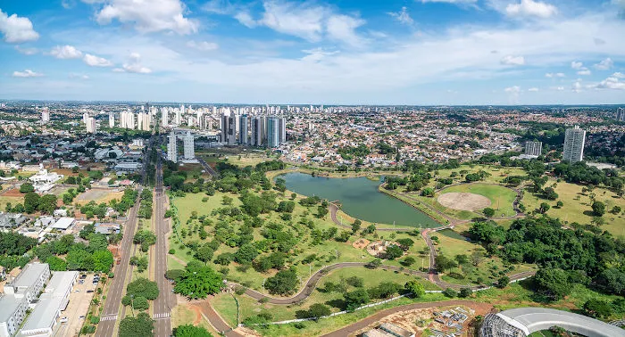

Mato Grosso do Sul é um estado localizado na região Centro-Oeste do Brasil, conhecido por sua rica biodiversidade, especialmente no Pantanal, uma das maiores áreas alagadas do mundo, e por sua forte economia baseada na agroindústria, como a produção de soja, milho e carne bovina. O governador de Mato Grosso do Sul é Eduardo Riedel, que tem trabalhado para promover o desenvolvimento sustentável e melhorar a qualidade de vida dos moradores do estado.
